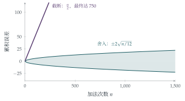

STEP II 1993，第 15 题
继续之前，请先阅读题目（原题为英文）。题目载于 STEP Support Programme 的题目资料库： step.maths.org/questions/93-s2-q15
引子
1982 年，温哥华证券交易所推出了一个新指数，起始值为 \(1000\)。每当有股价变动，指数便会重新计算，并截断（truncate）至小数点后三位。每次截断平均损失 \(0.0005\)，看来微不足道。可是每天大约要重新计算 \(3000\) 次，二十二个月后，尽管大市上升，指数却只剩下约 \(520\)。经正确重算后，指数一夜之间跃升至约 \(1100\)。
这道题目解释了个中原因。截断误差（truncation error）全部朝同一方向，因此会稳步累积，与运算次数成正比。舍入误差（rounding error）则有正有负，大部分互相抵销：它们的增长速度只相当于运算次数的平方根，这正是中心极限定理（central limit theorem）（第 12.24 节）所预测的随机漫步（random walk）行为。
动笔之前
若某数的小数部分 \(U\) 在 \([0, 1)\) 上均匀分布（uniform），把该数截断时误差是多少？舍入时又是多少？两者的平均值（mean）和方差（variance）各是多少？
截断是以 \(\lfloor a\rfloor\) 取代 \(a\)，误差（真确值减近似值）为 \(U\)，在 \([0, 1)\) 上均匀分布：平均值为 \(\frac12\)，方差为 \(\frac{1}{12}\)。舍入所得的误差在 \((-\frac12, \frac12]\) 上均匀分布：平均值为 \(0\)，方差为 \(\frac{1}{12}\)。
逐步解题
阶段 1 总误差
加了 \(1500\) 个数之后，总误差是 \(1500\) 个独立（independent）误差之和，根据中心极限定理，它近似于正态分布（normal distribution）：
LEP（舍入）：平均值为 \(0\)，方差为 \(\frac{1500}{12} = 125\)，标准差（standard deviation）为 \(\sqrt{125} \approx 11.18\)。
VOZ（截断）：平均值为 \(\frac{1500}{2} = 750\)，标准差同样是 \(11.18\)。
阶段 2 出现大误差的概率
对 LEP 而言，若 \(E \sim \mathrm{N}(0, 125)\)，\(\mathrm{P}(|E| > 15)\) 是多少？对 VOZ 而言，误差几乎必然落在哪里？
对 LEP 而言，\(\frac{15}{11.18} \approx 1.342\)，所以 \[\mathrm{P}(|E| > 15) \approx 2\bigl(1 - \Phi(1.342)\bigr) \approx 2 \times 0.090 = 0.18.\] 对 VOZ 而言，误差约为 \(750 \pm 11\)；其绝对值小于 \(15\) 的概率基本上是零，所以 \(\mathrm{P}(|E| > 15) \approx 1\)。■
阶段 3 可以做多少次加法？
做了 \(n\) 次加法后，LEP 的误差的标准差为 \(\sqrt{n/12}\)。何时有 \(\mathrm{P}(|E| < 10) \geq 0.9\)？
我们需要 \(\frac{10}{\sqrt{n/12}} \geq 1.645\)（因为 \(\mathrm{P}(|Z| < 1.645) = 0.9\)），即 \(\frac{n}{12} \leq \bigl(\frac{10}{1.645}\bigr)^2 \approx 36.95\)，所以 \(n \leq 443\)。LEP 可以做大约 \(443\) 次加法。■

回顾
为每个误差建立模型。小数部分均匀分布，令每个误差都有简单的分布。
把平均值和方差相加。平均值可以相加（得出偏差 \(\frac n2\)），而对于独立的误差，方差同样可以相加。
正态近似。中心极限定理把 \(1500\) 个均匀误差之和化为正态分布。
背后的数学
偏差与方差
截断是有偏（biased）的：其误差的平均值不是零，而偏差（bias）会线性累积。舍入是无偏（unbiased）的，其误差的表现有如随机漫步，增长速度相当于 \(\sqrt n\)。经过一百万次运算后，两者的分别就是数量级为 \(500\,000\) 的误差与数量级为 \(300\) 的误差之别。这与实验中系统误差（systematic error，例如仪器校准失准）和随机测量误差（random error）之间的区别如出一辙：把多次测量结果取平均，可以减少随机误差，对系统误差却毫无作用。
浮点数
所有电脑都只能以有限的精确度储存实数，每次算术运算都要把结果舍入。现代电脑遵从 IEEE 754 标准，把结果舍入至最接近的可表示数；若刚好位于两数正中，则取末位为偶数的一个，目的正是令舍入平均而言无偏。即使如此，把大量数字相加时若不小心处理，仍会损失准确度；William Kahan 的补偿求和（compensated summation）算法（1965 年）会记录失去的低位数字，再把它们加回去。1991 年波斯湾战争期间，一个爱国者导弹连未能拦截一枚来袭导弹，原因是它的时钟以十分之一秒为单位计时，而这个数无法以二进制准确储存；连续运作 \(100\) 小时后，截断误差已增至约三分之一秒，足以令目标位置的估算偏差超过半公里。
温哥华证券交易所指数于 1982 年 1 月设立，起始值为 \(1000.000\)。到 1983 年 11 月，尽管大市普遍上升，指数却已跌至约 \(524\)。顾问发现，指数每天重新计算数千次，而每次都截断（而非舍入）至小数点后三位。经过一个周末的正确重算，指数重开时约为 \(1098\)。这件事已成为数值计算课程中的经典警示。
思维技巧
正负号一致的误差会线性累积；平均值为零的独立误差则按平方根的速度累积。先认清你面对的是哪一种。
在大学，数值分析（numerical analysis）研究误差如何在计算过程中传播，统计学则区分偏差与方差；“偏差–方差权衡”（bias–variance trade-off）是现代机器学习的核心概念。
延伸练习
修正 VOZ。若 VOZ 在最后把 \(\frac n2\) 加到答案上，其误差的分布是甚么？它现在是否与 LEP 一样好？
舍入至小数点后一位。若把各数舍入至小数点后一位，而被舍去的数字均匀分布，求把 \(10\,000\) 个数相加时总误差的标准差。
温哥华指数。若指数每天重新计算 \(3000\) 次，每次截断平均损失 \(0.0005\)，那么在一年 \(250\) 个交易日内，指数会损失多少？
精确分布。求两个舍入误差之和的精确密度函数（density，呈三角形）。若是三个误差之和，试绘出其草图。它多快便开始貌似正态分布？
延伸阅读
Nicholas Higham, Accuracy and Stability of Numerical Algorithms（SIAM）。关于舍入误差的权威著作；第一章浅白易读。
David Goldberg, “What every computer scientist should know about floating-point arithmetic”, ACM Computing Surveys 23 (1991)。经典之作，可在网上免费阅读。
Tim Harford, How to Make the World Add Up（Bridge Street），探讨数据中的系统误差。